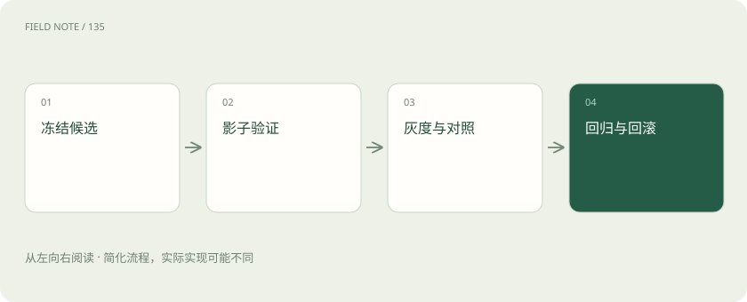
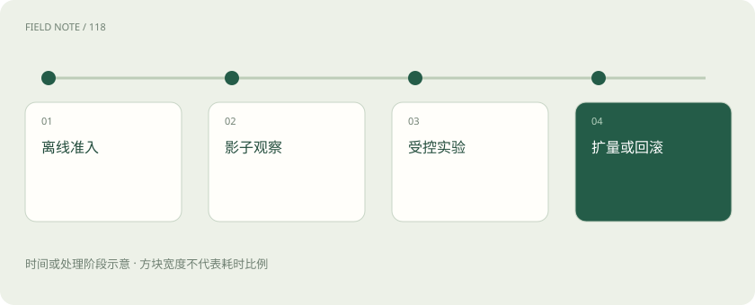
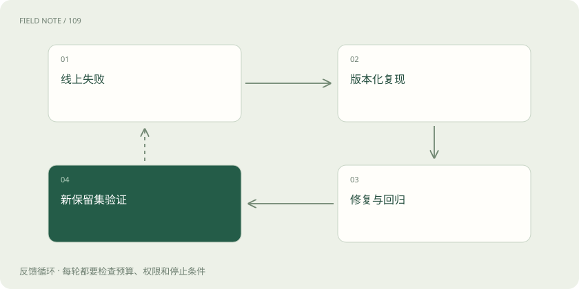

先读哪些知识
先用一个类比理解
类比只帮助建立直觉，不等同于技术的完整机制。
一图看懂

发布对象是一整套系统
模型、提示词、检索快照、路由策略、工具契约和裁判规则都可能改变结果。一次发布应明确这些版本的组合，避免模型回滚了但提示词和知识库仍停留在新版本。候选冻结后先完成离线质量、权限、工具副作用和资源约束检查，生成可对照的已知失败清单。
离线验收确定进入资格
离线集合适合稳定比较和故障复现，但不能完全模拟真实输入变化、并发负载和用户行为。除了整体成功率，还要检查关键分层和阻断错误；同时记录延迟、Token、工具及重试成本。通过离线门槛只意味着可以进入下一阶段，不应直接宣称已改善所有线上用户体验。
影子流量检查实际兼容
影子模式复制真实请求到候选系统，但不给用户使用候选答案。它可以检验输入格式、真实长度、选路、超时与成本预测。复制写操作会产生真实副作用，因此工具应使用只读、沙箱或禁止写入的替代机制。影子模式看不到用户对候选答案的反馈，也不能测出完整交互收益。
图解：发布路径

灰度首先控制影响范围
从一小部分可识别用户或租户开始，监控关键错误和负载。灰度表示暴露范围受控，并不自动构成科学对照实验。选取特别容易的用户试点可能低估风险，应覆盖目标任务分层；对高影响操作保留人工门槛，准备在触发条件时停止扩量，而非等到全部指标显著恶化。
A/B 需要稳定随机单位
比较效果时按用户、会话或租户稳定分桶，避免同一会话中模型来回变化产生干扰。两组尽量同期运行，保持除被测因素外的配置一致。若共享容量导致实验组挤占对照组，或用户之间分享结果，独立比较假设会受影响。实验前应写清主指标、护栏、样本量和停止规则。
不要把短期点击当成功
用户点赞、复制、停留时长和再次提问都只是代理信号：重复提问可能表示深入，也可能表示第一轮失败。应关联任务完成、关键错误、人工转接、恢复时间等更接近目标的结果。不同任务完成时间不同，观察窗口过短会让慢完成任务被误记为失败，或把尚未暴露的问题当成功。
观测沿链路分段
请求耗时拆为入口排队、检索、重排、模型首 Token、生成、工具和客户端传输。质量故障关联候选证据、模型版本和业务结果，不能只留下一个“请求失败”。高分位延迟与错误分层可以发现少数长输入用户受到的损害。日志应脱敏并限制保留，同时保持足够关联标识支持复现。
图解：故障回流

总成本以合格任务计
除了模型输入输出费，还要计入检索、重排、缓存、失败重试、影子运行、人工审核与运营处理。假设甲 1000 次任务花 100 元、成功 900 次，乙花 80 元、成功 600 次，单位成功成本分别约 0.111 和 0.133 元。乙单次请求便宜，完成同样业务量却可能更贵，数字仅为假想演示。
回滚触发写在扩量前
可设权限泄露立即停止、关键错误超阈值暂停、尾延迟或成本持续越界回滚等规则，具体数值由业务风险决定。回滚需要恢复模型、路由、提示词和兼容知识快照，并处理已执行外部动作；配置回退不会自动撤销变更、已发送消息或已创建工单，副作用要有单独补偿流程。
生产失败进入回归闭环
每次新故障保存脱敏输入、当时版本、必要证据与判定原因，归入对应失败层。开发可用该样本修复，但保留集应继续隔离，避免把所有评测变成已练习题。定期按新流量重新抽样，检查任务分布、裁判偏差与成本漂移；发布完成是持续验证的开始，而不是质量责任的终点。
实验结果也有保质期
一次实验在某段流量、某个模型版本和某种负载下成立，不能无限外推。活动高峰、知识库扩容、用户结构变化或供应方升级，都可能改变原先收益。应保存实验适用条件，并在关键变化发生时触发重评。
回归集负责防止已知错误复发，新的线上抽样负责发现未知变化，两者都需要。只维护固定回归题会逐渐把系统优化成擅长旧题；只看随机新题又可能遗漏曾经严重的少见故障。把固定风险集与滚动抽样并行使用，才能兼顾稳定性和现实覆盖。
放在一起对比
| 阶段 | 可验证 | 不能独自证明 |
|---|---|---|
| 离线 | 固定集质量 | 真实流量效果 |
| 影子 | 输入兼容负载 | 用户收益 |
| A/B | 同期效果差异 | 所有未来分布 |
放进真实场景
新检索器在线总体正确率提高，但历史政策问题错误翻倍。若这属于关键业务，停止扩量并回滚检索快照与策略，再用历史日期分层回归复现。不能仅因总体平均上涨继续放量；修复后仍需重新经过冻结、离线与小流量阶段。
别踩这个误区
想一想
为什么影子通过仍需要灰度？
影子能验证实际请求兼容，却缺少用户使用候选结果的行为反馈，真实副作用与交互闭环也常被隔离。
关联阅读
资料与边界
本文为原创知识讲解。类比和图示经过简化；示例数字不代表实测或报价。整理日期：2026-11-04。文末列出对应技术的原始资料，具体功能与版本支持请以原文为准。